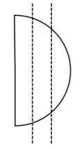

eDNA Filter Extraction
(using Qiagen blood and tissue kit)
Filter Lysing
Need:

Notes:
- extract milliQ water filters with same steps to use as extraction negative control (check with Qubit afterwards)
- usually two per experiment or field collection
- usually two per experiment or field collection
- it is best to label tubes before starting lysis and extraction
- lysis tubes: sample name
- spin-column tubes: sample name
- final storage tubes: samples name (eg. 9TW_2410_01 or UMMS_2409_01) usually on top & side; & DNA extraction date
Steps:
*BOLDED STEPS = modifications to Qiagen blood and tissue kit protocol

DNA extraction
Need:
Steps:
*BOLDED STEPS = modifications to Qiagen blood and tissue kit protocol
Possible Next Steps
- Qubit
- need to dilute DNA? -> dilute with low TE buffer
- PCR then gel or qPCR
- if doing PCR then gel, follow the qPCR profile and amounts (replace the probe with water, and use PCR strip tubes instead of a plate